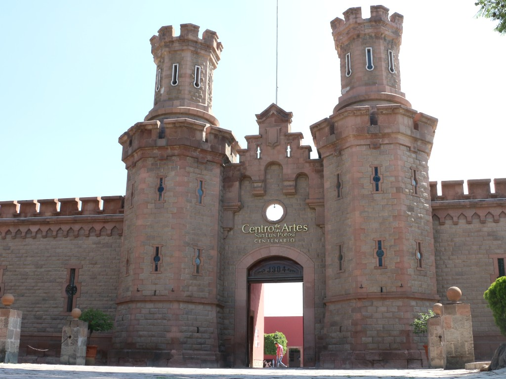

TEATRO POLIVALENTE
Inaugurado el 27 de agosto de 2008, el Centro de las Artes
de San Luis Potosí forma parte de la Red Nacional de Centros
de las Artes, conformada por siete Centros de Formación y Producción Artística, y trece Centros de las Artes. El
inmueble en donde se sitúa el CEART fue utilizado desde su origen (1904), hasta el mes de marzo de 1999, como
centro penitenciario; la construcción se apega al modelo panóptico de arquitectura carcelaria (con vigilancia total
desde un solo punto), ideada por el filósofo Jeremy Bentham.
NOSOTROS
MISIÓN
El CEART es una institución dedicada a la educación, producción y divulgación de las artes. Su propósito principal es fortalecer, ampliar y actualizar el campo educativo a través de modelos integrales, con especial énfasis en las manifestaciones artísticas actuales. Su proyecto académico contempla, como uno de los fines más importantes, la integración de las artes, humanidades y tecnologías, mediante esquemas multi e interdisciplinarios.
VISIÓN
Ser un centro de educación artística que impulse el desarrollo de la formación en las artes, así como la especialización y actualización de profesionales de las artes del ámbito local y regional, a partir de un modelo innovador, de su carácter interdisciplinario, las condiciones actuales de la práctica profesional, y de su integración en la vida social y comunitaria.
Agenda
Inaugurado el 27 de agosto de 2008, el Centro de las Artes de San Luis Potosí forma parte de la Red Nacional de Centros de las Artes, conformada por siete Centros de Formación y Producción Artística, y trece Centros de las Artes. El inmueble en donde se sitúa el CEART fue utilizado desde su origen (1904), hasta el mes de marzo de 1999, como centro penitencia
